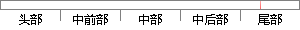

16: accelerometerValues = event.
片段位置图

相似结果|
1
原句片段：16: accelerometerValues = event.
相似片段 1：[] accelerometerValues; private float[] magneticFieldValues; private float[]...16]; // SensorManager.getRotationMatrixFromVector(rotationMatrix, // event....
相似片段 2：_ACCELEROMETER: accelerometerValues = event.values....[16]; float[] I = new float[16]; Sensor...
相似片段 3：} else if (R.length == 16) { ... ...accelerometerValues = event.values; break; case Sensor...
|
※ 片段修改建议 ※
近似词参考：